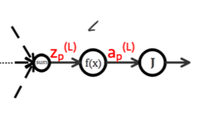

当我们使用前馈神经网络接受输入 \(x\) 并产生输出 \(\hat{y}\) 时，信息通过网络向前流动。每一层网络都需要一个参数矩阵参数矩阵 \(W^{(l)}\) 和偏置 \(b^{(l)}\) 来计算出本层的真正输入 $ z^{(l)} $，然后经过激活函数得到 \(a^{(l)}\)(相当于之前的 \(x\) )作为下一层的输入。那么当信息在网络中流动了一遍之后，我们该如何修改每一层的参数 \(W^{(l)}\) 和 \(b^{(l)}\) 呢？ 此时反向传播算法就应运而生了。
1. 前向传播
在进行正式的介绍时，我们先来对神经网络中的每个字母所代表的含义，进行一下梳理，只有明白了每个参数所代表的含义，才能更好的去理解算法本身。
\(X = [x_1, x_2, x_3]^T\)，首先\(X\)是一个列向量，每个元素对应图中的一个小圆点。\(X\)是整个网络的输入！
$W^{(1)} \(,\)W{(2)}\(,\)W{(3)}$ 代表的是 \(l_1\), \(l_2\), \(l_3\) 层的矩阵参数；\(b^{(1)}\), \(b^{(2)}\), \(b^{(3)}\)代表的是偏置。
\(W_{21}^{(1)}\) 的上角标(1)表示第一层，下角标21表示的是第2个神经元对应 \(x_1\) 的的参数。
\(W_{12}^{(2)}\) 表示的是第2层网络的第1个神经元的第2个输入。
\(z_2^{(1)}\) 表示第1层网络的第2个神经元的输入
\(a_2^{(1)}\) 表示第1层网络的第2个神经元经过激活函数的输出
当我们知道了上面符号的含义之后，我们就会发现关键点是如何计算 \(Z\) 的值 \[ \begin{aligned} z_1^{(1)} &= w_{11}^{(1)}x_1 + w_{12}^{(1)}x_1 + w_{13}^{(1)}x_3 + b_1^{(1)} \qquad \qquad a_1^{(1)} = f(z_1^{(1)}) \\ z_2^{(1)} &= w_{21}^{(1)}x_1 + w_{22}^{(1)}x_1 + w_{23}^{(1)}x_3 + b_2^{(1)} \qquad \qquad a_2^{(1)} = f(z_2^{(1)}) \\ z_3^{(1)} &= w_{31}^{(1)}x_1 + w_{32}^{(1)}x_1 + w_{33}^{(1)}x_3 + b_3^{(1)} \qquad \qquad a_3^{(1)} = f(z_3^{(1)}) \\ \end{aligned} \] 这么整齐的式子，简直就是为了矩阵而生的！ \[ \begin{aligned} z^{(1)} = \begin{bmatrix} z_1^{(1)} \\ z_2^{(1)} \\ z_3^{(1)} \end{bmatrix} = \begin{bmatrix} w_{11}^{(1)} & w_{12}^{(1)} & w_{13}^{(1)} \\ w_{21}^{(1)} & w_{22}^{(1)} & w_{23}^{(1)} \\ w_{31}^{(1)} & w_{32}^{(1)} & w_{33}^{(1)} \end{bmatrix} \begin{bmatrix} x_1 \\ x_2 \\ x_3 \end{bmatrix} + \begin{bmatrix} b_1^{(1)} \\ b_2^{(1)} \\ b_3^{(1)} \end{bmatrix} = W^{(1)}X + b^{(1)} \end{aligned} \] 然后，就有了 \[ \begin{aligned} z^{(2)} = \begin{bmatrix} z_1^{(2)} \\ z_2^{(2)} \\ \end{bmatrix} = \begin{bmatrix} w_{11}^{(2)} & w_{12}^{(2)} & w_{13}^{(2)} \\ w_{21}^{(2)} & w_{22}^{(2)} & w_{23}^{(2)} \\ \end{bmatrix} \begin{bmatrix} a_1^{(1)} \\ a_2^{(1)} \\ a_3^{(1)} \end{bmatrix} + \begin{bmatrix} b_1^{(2)} \\ b_2^{(2)} \\ b_3^{(2)} \end{bmatrix} = W^{(2)}a^{(1)} + b^{(2)} \end{aligned} \] 即： \[ \begin{aligned} a^{(1)} &= f(z^{(1)}) = f(W^{(1)}X + b^{(1)}) \\ a^{(2)} &= f(z^{(2)}) = f(W^{(2)}a^{(1)} + b^{(2)}) \\ \end{aligned} \] 总之， \[ z^{(l)} = W^{(l)}a^{(l-1)} + b^{(l)} \qquad \qquad \qquad a^{(l)} = f(z^{(l)}) \] 上面的公式总结为：输入的 \(x\) 提供一个初始的向量，经过第 \(l\) 层的参数矩阵 \(W^{(l)}\) 和偏置 \(b^{(l)}\) 计算得到了第 \(l\) 层的输入 $Z^{(l)} $，然后 \(Z^{(l)}\) 中的每个值都要经过激活函数 \(f(·)\) 产生第 \(l\) 层的输出，最后把输出与 \(W^{(l+1)}\) 和 \(b^{(l+1)}\) 计算得到第 \(l+1\) 层的输入 \(Z^{(l+1)}\)，然后再一次的经过激活函数 \(f(·)\) 产生第 \(l+1\)层的输出，如此循环往复的过程称作前向传播。
2. 反向传播
每一轮需要更新的参数是 \(W^{(l)}\) 和 \(b^{(l)}\)，从数学的角度上面来说就是使用梯度下降法来求解。最暴力的解法就是针对每一个 \(w_{ji}^{(l)}\) 求它的偏导，但是这种暴力的算法存在大量的重复计算过程，所以反向传播算法就应运而生。我们把上面那幅图中的标红的线路拿出来，单独的去看它。
注意：一定要理解这条线和上面图中的红线的对应关系
假如，我们要求 \(J(W, b)\) 关于 \(w_{ji}^{(l)}\) 的偏导，仔细观察上图蓝色部分
\(w_{ji}^{(l)}\) 首先变成了 \(z_j^{(l)}\)，然后向后传播到 \(J(W, b)\)
我们先不管它怎么传播过去的，针对 \(w_{ji}^{(l)}\) 、 \(z_j^{(l)}\) 和 \(J(W, b)\) 它们三个的关系，我们来应用链式法则。
由前向传播过程可知：$ z_{j}^{(l)} = {i = 1}{n_{l-1}}w_{ji}{(l)} a{i}^{(l-1)} + b_{j}^{(l)} $ \[ \begin{aligned} \frac{\partial J(W,b)}{\partial w_{ji}^{(l)}} &= \frac{\partial J(W,b)}{\partial z_j^{(l)}} \frac{\partial z_j^{(l)}}{\partial w_{ji}^{(l)}} = \frac{\partial J(W,b)}{\partial z_j^{(l)}} a_i^{(l-1)} \\ \frac{\partial J(W,b)}{\partial b_{j}^{(l)}} &= \frac{\partial J(W,b)}{\partial z_j^{(l)}} \frac{\partial z_j^{(l)}}{\partial b_{j}^{(l)}} = \frac{\partial J(W,b)}{\partial z_j^{(l)}} \end{aligned} \] 所以，我们的任务变成了：如何求 \(\frac{\partial J(W,b)}{\partial z_j^{(l)}}\) ，我们设 \[ \delta_j^{(l)} = \frac{\partial J(W,b)}{\partial z_j^{(l)}} \]
继续观察上面的图，可以发现：\(z_j^{(l)} \to a_j^{(l)} \to z_k^{(l+1)}\)
又因为：$ z_k^{(l+1)} = _{j = 1}{n_{l}}w_{kj}{(l+1)} a_j^{(l)} + b_k^{(l+1)} $ ，另外我们需要注意 \(a_j^{(l)}\) 与 \(l+1\) 层的所有 \(z\) 都有关系，所以 \[ \begin{aligned} \delta_j^{(l)} = \frac{\partial J(W,b)}{\partial z_j^{(l)}} &= \sum_{k=1}^{n_{l+1}} \frac{\partial J(W,b)}{\partial z_k^{(l+1)}} \frac{\partial z_k^{(l+1)}}{\partial a_j^{(l)}} \frac{\partial a_j^{(l)}}{\partial z_j^{(l)}} \\ &= \sum_{k=1}^{n_{l+1}} \frac{\partial J(W,b)}{\partial z_k^{(l+1)}} w_{kj}^{(l+1)} f'(z_j^{(l)}) \\ &= \sum_{k=1}^{n_{l+1}} \delta_k^{(l+1)} w_{kj}^{(l+1)} f'(z_j^{(l)}) \end{aligned} \]
对于最后一层
 \[ \delta_p^{(L)} = \frac{\partial J(W,b)}{\partial z_p^{(L)}} = \frac{\partial J(W,b)}{\partial a_p^{(L)}} \frac{\partial a_p^{(L)}}{\partial z_p^{(L)}} = \frac{\partial J(W,b)}{\partial a_p^{(L)}} f'(z_p^{(L)}) \]
3. 总结
有了上面的推导，反向传播算法的计算流程如下：
Step-1：依据前向传播算法求解每一层的激活值 \[ z^{(l)} = W^{(l)}a^{(l-1)} + b^{(l)} \qquad \qquad a^{(l)} = f(z^{(l)}) \] Step-2：计算出最后一层 (L 层) 的每个神经元的 \(\delta_p^{(L)}\) \[ \delta_p^{(L)} = \frac{\partial J(W,b)}{\partial z_p^{(L)}} = \frac{\partial J(W,b)}{\partial a_p^{(L)}} f'(z_p^{(L)}) \] Step-3：由后向前，依次计算出各 \(l\) 层的各个神经元的 \(\delta_j^{(l)}\) \[ \delta_j^{(l)} = \sum_{k=1}^{n_{l+1}} \delta_k^{(l+1)} w_{kj}^{(l+1)} f'(z_j^{(l)}) \] Step-4：计算出各 \(l\) 层的各个权重 $w_{ji}^{(l)} $ 的梯度及各个偏置 \(b_i^{(l)}\) 的梯度 \[ \begin{aligned} \frac{\partial J(W,b)}{\partial w_{ji}^{(l)}} &= \delta_j^{(l)}a_i^{(l-1)} \\ \frac{\partial J(W,b)}{\partial b_{j}^{(l)}} &= \delta_j^{(l)} \end{aligned} \] Step-5：对各 \(l\) 层的各个权重 $w_{ji}^{(l)} $ 的梯度及各个偏置 \(b_i^{(l)}\) 的梯度进行更新，直到代价函数 \(J(W,b)\) 足够小 \[ \begin{aligned} w_{ji}^{(l)} &= w_{ji}^{(l)} - \alpha \frac{\partial J(W,b)}{\partial w_{ji}^{(l)}} \\ b_j^{(l)} &= b_j^{(l)} - \alpha \frac{\partial J(W,b)}{\partial b_j^{(l)}} \end{aligned} \] 反向传播的最核心算式： \[ \begin{aligned} w_{ji}^{(l)} &= w_{ji}^{(l)} - \alpha \frac{\partial J(W,b)}{\partial w_{ji}^{(l)}} \\ &= w_{ji}^{(l)} - \alpha \frac{\partial J(W,b)}{\partial z_j^{(l)}} \frac{\partial z_j^{(l)}}{\partial w_{ji}^{(l)}} \\ &= w_{ji}^{(l)} - \alpha \frac{\partial J(W,b)}{\partial z_j^{(l)}} a_i^{(l-1)} \\ &= w_{ji}^{(l)} - \alpha \bigg( \sum_{k=1}^{n_{l+1}} \delta_k^{(l+1)} w_{kj}^{(l+1)} f'(z_j^{(l)}) \bigg) a_i^{(l-1)} \end{aligned} \]